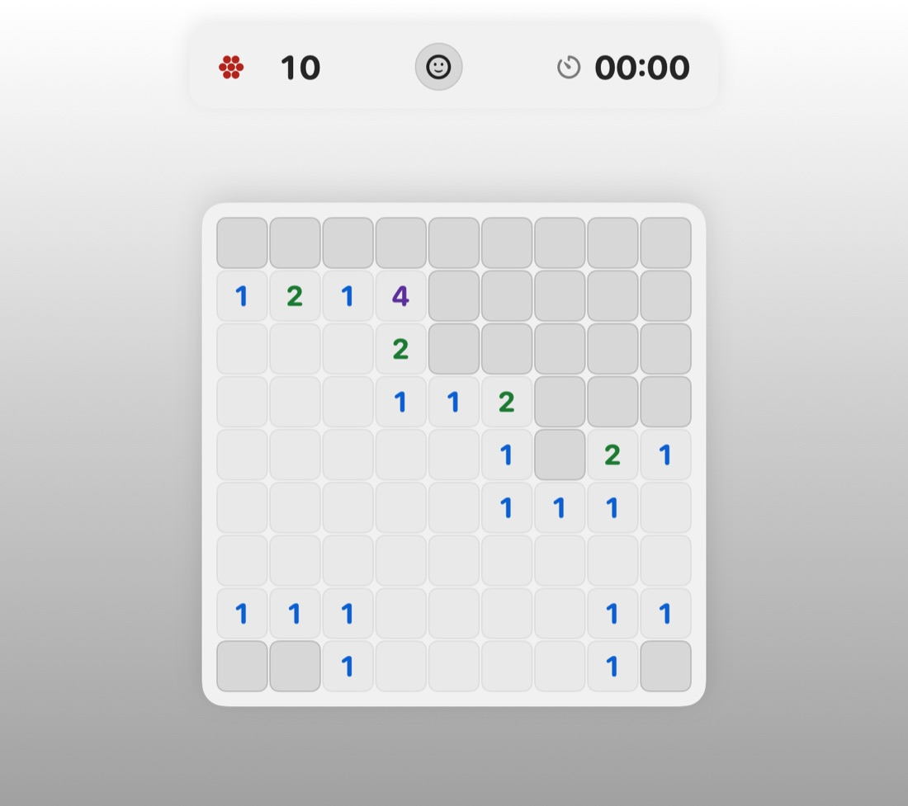

Logic puzzle
Mine Sweeper
Read the board. Mark the danger. Clear every safe square.
Follow the clues, flag the danger, and push for a faster clear across four board sizes. New to the grid? The guided lesson gets you moving.
- 4 themes
- 4 board sizes
- Guided lesson
- Personal bests
macOS 14 or later